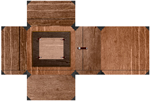
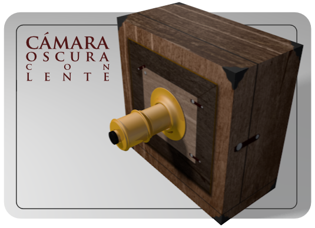

Mapeado de una caja
Base teórica
No siempre es un plano lo que hay que mapear y la técnica Desenvolver no es eficaz de una manera tan directa. Por ejemplo, si seleccionamos  todas las caras de un cubo y hacemos Malla/Desplegar UV/Desenvolver este es el resultado en el Editor UV
todas las caras de un cubo y hacemos Malla/Desplegar UV/Desenvolver este es el resultado en el Editor UV  .
.
Todas las caras coinciden unas encima de otras y el mapeado resulta imposible.
Como si de un recortable en cartulina se tratara seleccionamos aquellos lados por los que cortar para que se cree el desplegable correcto.
Seguimos en Modo Edición  para dar la orden y se produzcan los cortes que en Blender se han denominado costuras. Usamos Malla/Arista/Marcar costuras. La apariencia de esos lados en el editor Vista 3D cambia; ahora tienen un tono rojizo.
para dar la orden y se produzcan los cortes que en Blender se han denominado costuras. Usamos Malla/Arista/Marcar costuras. La apariencia de esos lados en el editor Vista 3D cambia; ahora tienen un tono rojizo.
Blender es sensible a esos cortes y ahora la orden Malla/Desplegar Uvs/Desenvolver tendrá este efecto en el Editor UV  (recordemos que tienen que estar todas las caras seleccionadas "A").
(recordemos que tienen que estar todas las caras seleccionadas "A").
Con esta disposición resulta realmente sencillo adaptar la imagen a las caras.
Textura para cámara oscura
| 
Desplegable para cámara oscura // Autor: Joaclint // Licencia: CC-BY-SA (Creative Commons)
|
Damos por hecho que ya nos encontramos en el entorno de trabajo UV Editing y que hemos cargado la imagen para la textura en el Editor UV  .
.
Lo primero que decidimos es no calcular las proporciones como hicimos con el plano y así probar nuevos recursos. Vamos directos a por las costuras. Si escogemos estos lados...

...este será el aspecto en el Editor UV  .
.
Esto obedece a toda la lógica explicada anterormente por lo que no debe extrañarnos que las caras sean todas cuadradas.
Las edicionones sobre el Editor UV  son muy similares a las del editor Vista 3D:
son muy similares a las del editor Vista 3D:
- Seleccionamos todos los vértices "A" y los giramos 90º ("R90"). Recolocamos con "G".
- Podemos hacer escalados en un eje ("SX", por ejemplo).

{kind=link}
- Pero sin duda lo mejor es Seleccionar con borde ("B") toda una secuencia de vértices y después desplazar "G" en el eje correspondiente.
Tras una dosis de trabajo y paciencia tendremos la geometría colocada en su sitio.

De regreso al entrono de trabajo Default, y tras activar el modo de sombreado Textura, para evitar que algunas caras mapeadas queden negras por falta de iluminación elegimos entre:
- Eliminar ("Supr") la única lámpara de la escena. Esto nos obligará a volver a sacarla luego si queremos tener una iluminación básica al completo.
- Cambiar la lámpara de capa. Recordamos que es necesario tenerla seleccionada y hacer Objeto/Mover a capa y seleccionar. Nosotros la enviamos a la segunda. Esta opción tiene todas las ventajas, porque al quedar la Capa 1 sin lámpara Blender le aplica una iluminación general en el editor Vista 3D desapareciendo el problema de las caras negras, aunque la Capa 2 con la lámpara esté activada para el render.
Llega la primera sorpresa: El cubo no estaba colocado adecuadamente respecto a la orientación de la textura (podemos consolarnos calculando cuántas posibilidades había y llegar a la conclusión de que hubiera sido casi un milagro). Comenzamos por el primer giro de 180º en el eje X ("RX180").
Aún así la caja sigue girada; es necesario una segunda orden, esta vez son 90º en el eje Y ("RY90")
Tras configurar el material tal y como se vio en el apartado anterior, y con una iluminación de tres puntos...
